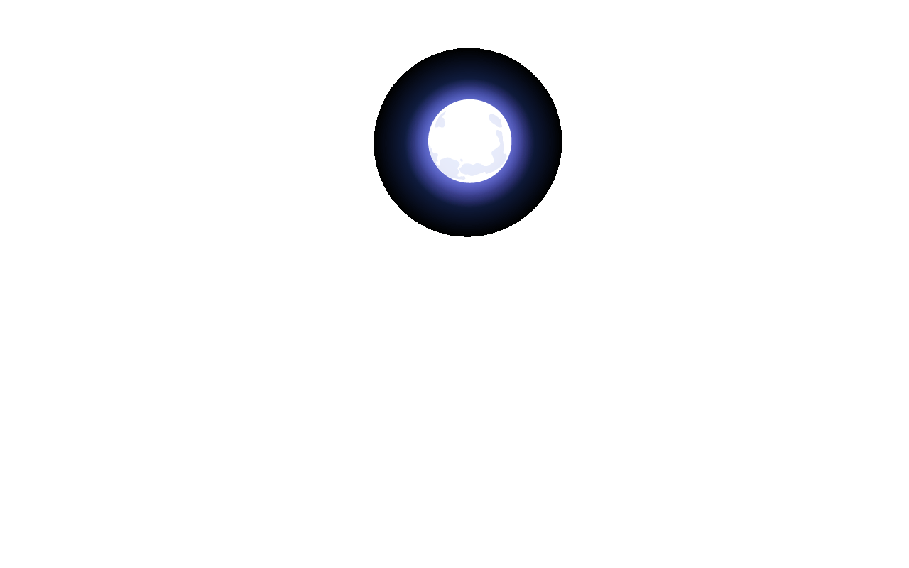
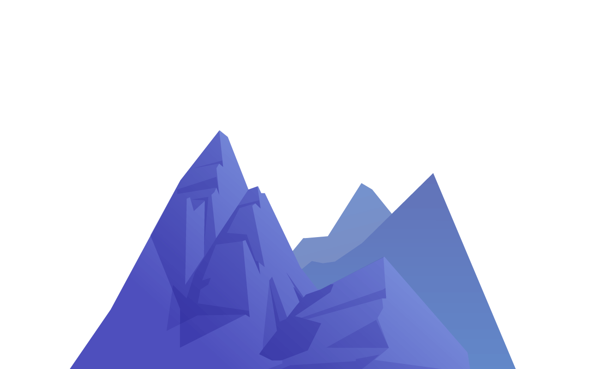
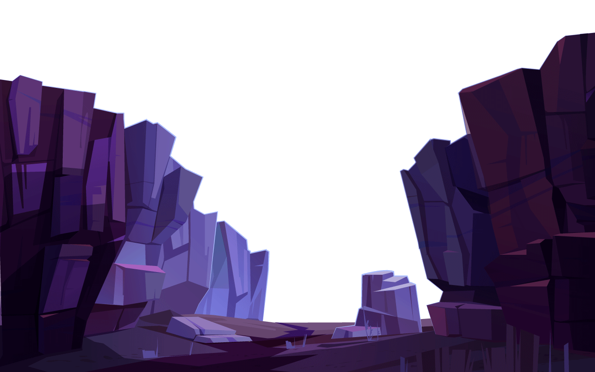
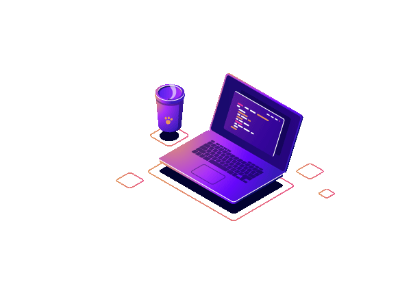

Parallax Scrolling is a web design technique in which
background and foreground elements move at different
speeds as the user scrolls through a page, creating an
illusion of depth and a sense of three-dimensional movement.
By combining multiple visual layers and carefully controlling their movement, designers can create immersive experiences that make websites feel more dynamic and engaging.
As you scroll down the page, different elements respond
to scrolling at different speeds.
Background images may
move more slowly than foreground content, creating a
sense of distance and depth.
Visual Depth: Creates a sense of depth through layered elements.
Engagement: Makes scrolling more interactive and interesting.
Visual Storytelling: Helps guide visitors through a visual narrative.
Modern Design: Adds movement and personality to web experiences.
Scroll through this page and observe how different elements move at different speeds. This is Parallax Scrolling in action.
